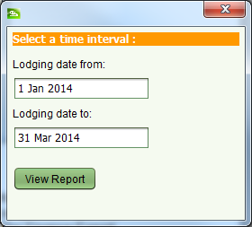

The Lodgments Report lists information on the number of applications and services processed during a given time period. It can be accessed using the Reports > Lodgments Report menu option in the SOLA Desktop main menu. Enter the appropriate time interval in the dialog displayed and click View Report to generate the Lodgments Report.

Lodgments Report Interval